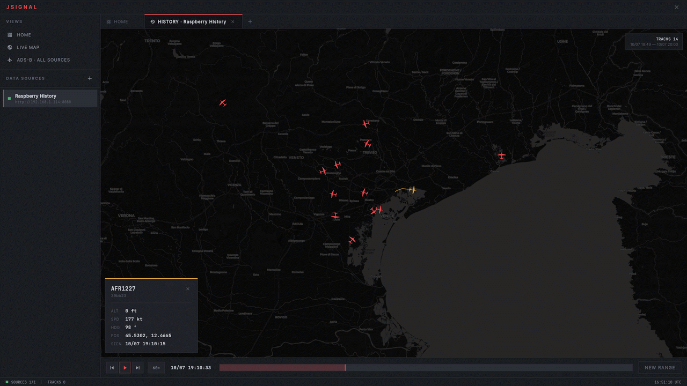
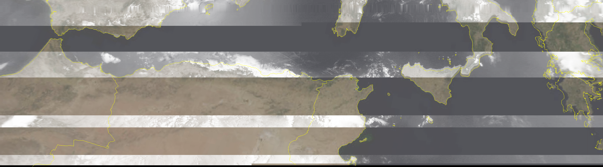

Software developer. I'm interested in low-level programming, embedded systems, and SIGINT.
Currently working on Automatic Vehicle Monitoring (AVM) systems while finishing my Computer Science degree at Ca' Foscari.

